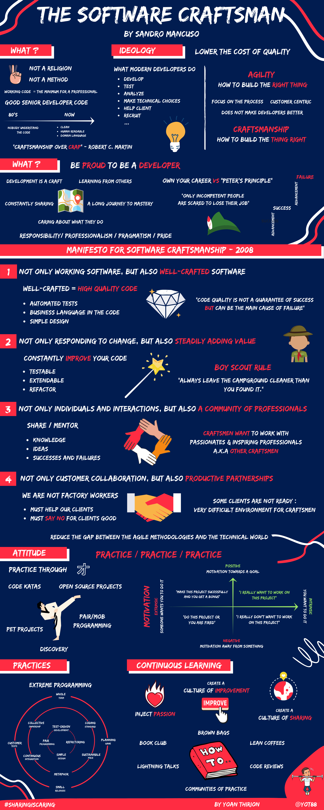

Artisanat Logiciel
3 mots / idées (5–10 min)
Notez 3 mots ou idées que vous associez à Artisanat logiciel / Software Craftsmanship.
Travail :
- 1 min individuel
- 2 min en binôme
- Mise en commun visuelle
Débriefe guidé
Regrouper les mots sous 4 familles :
- Qualité
- Professionnalisme
- Excellence technique
- Apprentissage continu
The Software Craftsman (15–20 min)

“Craft ou pas Craft ?” (15 min)
Travail en petits groupes :
- En quoi, ce comportement est désaligné avec l’artisanat logiciel ?
- Quel serait le comportement Craft ?
- Quelles pratiques concrètes ? Quoi mettre en place ?
Détails de l'atelier ici
Synthèse collective (10 min)
Revenir aux mots du début.
“Après cette session, changeriez-vous un ou plusieurs de vos 3 mots ?”
L’artisanat logiciel ce n’est pas :
- Faire du code parfait
- Être élitiste
- Être dogmatique
C’est :
- Se comporter en professionnel
- Assumer la qualité
- Progresser en permanence
- Construire avec fierté